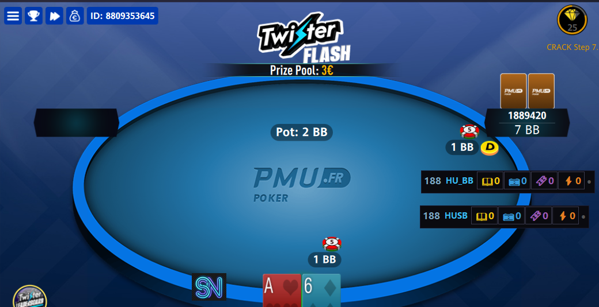

🟣 Mode Mini — Ultra-discret
1 seule ligne, tout l'essentiel
Le Mini HUD affiche le pseudo raccourci du joueur, son mode de jeu (HU/3-way), et des icônes cliquables pour accéder aux notes, badges et quick notes.
- → Idéal pour : mass multi-tables (8+ tables)
- → Prend un minimum de place sur la table
- → Toutes les features accessibles en 1 clic


Mini HUD en 3-way (haut) et Heads-Up (bas)